Operations¶
This is the work in progress operations guide for showing information, which are relevant for production use.
Skipper is proven to scale with number of routes beyond 300.000 routes
per instance. In Kubernetes we run beyond 15000 routes in a single
cluster. A single Skipper instance was tested to respond 65.000 http
requests per second in continuous load tests at <=25ms p999 in a
production like setup with logs, metrics and tracing enabled. Skipper
regularly runs in production at 2 million requests per second running
multiple instances.
Connection Options¶
Skipper’s connection options are allowing you to set Go’s http.Server Options on the client side and http.Transport on the backend side.
It is recommended to read this blog post about net http timeouts in order to better understand the impact of these settings.
Backend¶
Backend is the side skipper opens a client connection to.
Closing idle connections is required for DNS failover, because Go’s http.Transport caches DNS lookups and needs to create new connections for doing so. Skipper will start a goroutine and use the specified time.Duration to call CloseIdleConnections() on that http.Transport.
-close-idle-conns-period string
period of closing all idle connections in seconds or as a
duration string. Not closing when less than 0 (default "20")
This will set MaxIdleConnsPerHost on the http.Transport to limit the number of idle connections per backend such that we do not run out of sockets.
-idle-conns-num int
maximum idle connections per backend host (default 64)
This will set MaxIdleConns on the http.Transport to limit the number for all backends such that we do not run out of sockets.
-disable-http-keepalives bool
forces backend to always create a new connection
This will set DisableKeepAlives on the http.Transport to disable HTTP keep-alive and to only use the connection for single request.
-max-idle-connection-backend int
sets the maximum idle connections for all backend connections
This will set TLSHandshakeTimeout on the http.Transport to have timeouts based on TLS connections.
-tls-timeout-backend duration
sets the TLS handshake timeout for backend connections (default 1m0s)
This will set Timeout on net.Dialer that is the implementation of DialContext, which is the TCP connection pool used in the http.Transport.
-timeout-backend duration
sets the TCP client connection timeout for backend connections (default 1m0s)
This will set KeepAlive on net.Dialer that is the implementation of DialContext, which is the TCP connection pool used in the http.Transport.
-keepalive-backend duration
sets the keepalive for backend connections (default 30s)
This will set DualStack (IPv4 and IPv6) on net.Dialer that is the implementation of DialContext, which is the TCP connection pool used in the http.Transport.
-enable-dualstack-backend
enables DualStack for backend connections (default true)
Client¶
Client is the side skipper gets incoming calls from. Here we can set timeouts in different parts of the http connection.
This will set ReadTimeout in http.Server handling incoming calls from your clients.
-read-timeout-server duration
set ReadTimeout for http server connections (default 5m0s)
This will set ReadHeaderTimeout in http.Server handling incoming calls from your clients.
-read-header-timeout-server duration
set ReadHeaderTimeout for http server connections (default 1m0s)
This will set WriteTimeout in http.Server handling incoming calls from your clients.
-write-timeout-server duration
set WriteTimeout for http server connections (default 1m0s)
This will set IdleTimeout in
http.Server handling
incoming calls from your clients. If you have another loadbalancer
layer in front of your Skipper http routers, for example AWS Application Load
Balancers,
you should make sure, that Skipper’s idle-timeout-server setting is
bigger than the idle timeout from the loadbalancer in front. Wrong
combinations of idle timeouts can lead to a few unexpected HTTP 502.
-idle-timeout-server duration
maximum idle connections per backend host (default 1m0s)
This configures maximum number of requests served by server connections:
-keepalive-requests-server int
sets maximum number of requests for http server connections. The connection is closed after serving this number of requests. Default is 0 for unlimited.
This configures maximum age for server connections:
-keepalive-server duration
sets maximum age for http server connections. The connection is closed after it existed for this duration. Default is 0 for unlimited.
This will set MaxHeaderBytes in http.Server to limit the size of the http header from your clients.
-max-header-bytes int
set MaxHeaderBytes for http server connections (default 1048576)
TCP LIFO¶
Skipper implements now controlling the maximum incoming TCP client connections.
The purpose of the mechanism is to prevent Skipper requesting more memory than available in case of too many concurrent connections, especially in an autoscaling deployment setup, in those case when the scaling is not fast enough to follow sudden connection spikes.
This solution relies on a listener implementation combined with a LIFO queue. It allows only a limited number of connections being handled concurrently, defined by the max concurrency configuration. When the max concurrency limit is reached, the new incoming client connections are stored in a queue. When an active (accepted) connection is closed, the most recent pending connection from the queue will be accepted. When the queue is full, the oldest pending connection is closed and dropped, and the new one is inserted into the queue.
The feature can be enabled with the -enable-tcp-queue flag. The maximum
concurrency can bet set with the -max-tcp-listener-concurrency flag, or,
if this flag is not set, then Skipper tries to infer the maximum accepted
concurrency from the system by reading the
/sys/fs/cgroup/memory/memory.limit_in_bytes file. In this case, it uses the
average expected per request memory requirement, which can be set with the
-expected-bytes-per-request flag.
Note that the automatically inferred limit may not work as expected in an environment other than cgroups v1 or cgroups v2.
OAuth2 Tokeninfo¶
OAuth2 filters integrate with external services and have their own
connection handling. Outgoing calls to these services have a
default timeout of 2s, which can be changed by the flag
-oauth2-tokeninfo-timeout=<OAuthTokeninfoTimeout>.
OAuth2 Tokenintrospection RFC7662¶
OAuth2 filters integrate with external services and have their own
connection handling. Outgoing calls to these services have a
default timeout of 2s, which can be changed by the flag
-oauth2-tokenintrospect-timeout=<OAuthTokenintrospectionTimeout>.
Monitoring¶
Monitoring is one of the most important things you need to run in
production and skipper has a godoc page
for the metrics package,
describing options and most keys you will find in the metrics handler
endpoint. The default is listening on :9911/metrics. You can modify
the listen port with the -support-listener flag. Metrics can exposed
using formats Codahale (json) or Prometheus and be configured by
-metrics-flavour=, which defaults to codahale. To expose both
formats you can use a comma separated list: -metrics-flavour=codahale,prometheus.
Prometheus¶
In case you want to get metrics in Prometheus format exposed, use this option to enable it:
-metrics-flavour=prometheus
It will return Prometheus metrics on the common metrics endpoint :9911/metrics.
To monitor skipper we recommend the following queries:
- P99 Proxy latency:
histogram_quantile(0.99, sum(rate(skipper_proxy_total_duration_seconds_bucket{}[1m])) by (le)) - P99 backend latency:
histogram_quantile(0.99, sum(rate(skipper_serve_host_duration_seconds_bucket{}[1m])) by (le)) - HTTP 2xx rate:
histogram_quantile(0.99, sum(rate(skipper_serve_host_duration_seconds_bucket{code =~ "2.*"}[1m])) by (le) ) - HTTP 4xx rate:
histogram_quantile(0.99, sum(rate(skipper_serve_host_duration_seconds_bucket{code =~ "4.*"}[1m])) by (le) ) - HTTP 5xx rate:
histogram_quantile(0.99, sum(rate(skipper_serve_host_duration_seconds_bucket{code =~ "52.*"}[1m])) by (le) ) - Max goroutines (depends on label selector):
max(go_goroutines{application="skipper-ingress"}) - Max threads (depends on label selector):
max(go_threads{application="skipper-ingress"}) - max heap memory in use in MB (depends on label selector):
max(go_memstats_heap_inuse_bytes{application="skipper-ingress"}) / 1024 / 1000 - Max number of heap objects (depends on label selector):
max(go_memstats_heap_objects{application="skipper-ingress"}) - Max of P75 Go GC runtime in ms (depends on label selector):
max(go_gc_duration_seconds{application="skipper-ingress",quantile="0.75"}) * 1000 * 1000 - P99 request filter duration (depends on label selector):
histogram_quantile(0.99, sum(rate(skipper_filter_request_duration_seconds_bucket{application="skipper-ingress"}[1m])) by (le) ) - P99 response filter duration (depends on label selector):
histogram_quantile(0.99, sum(rate(skipper_filter_response_duration_seconds_bucket{application="skipper-ingress"}[1m])) by (le) ) - If you use Kubernetes limits or Linux cgroup CFS quotas (depends on label selector):
sum(rate(container_cpu_cfs_throttled_periods_total{container_name="skipper-ingress"}[1m]))
You may add static metrics labels like version using Prometheus relabeling feature.
Proxy Metrics¶
Skipper Proxy Metrics provides information about the time spent by skipper in processing a request i.e., the time spent by a request inside skipper (this excludes the response application of filters to a req/res, the backend roundtrip and serving the response). The total proxy metrics are enabled by default and these metrics can be used to build KPIs / SLOs, so as to understand and monitor the performance of skipper.
The Proxy Metrics excludes the filter processing as this is dependent on which filters the user decides to use for a particular route. The backend round trip time depends on the backend application and the operation being performed. And the serve response depends on the client. These are operations are not in control of skipper and are hence excluded to solely monitor the performance of Skipper.
These metrics are exposed in /metrics, the example json structure looks like this:
{
"timers" : {
"skipper.proxy.total": {
"15m.rate": 0.2,
"1m.rate": 0.2,
"5m.rate": 0.2,
"75%": 288375,
"95%": 288375,
"99%": 288375,
"99.9%": 288375,
"count": 1,
"max": 288375,
"mean": 288375,
"mean.rate": 0.7268368234069077,
"median": 288375,
"min": 288375,
"stddev": 0
},
}
}
The proxy metrics can also be fetched in more detail, i.e., splits the proxy total metrics to get the proxy request metrics and proxy response metrics. The Proxy Request Metrics provides the duration / time taken from the start of ServeHTTP till the backend round trip. The Proxy Response Metrics provides the duration / time taken from after the backend round trip till the response is served.
-proxy-request-metrics
enables the collection proxy request metrics
-proxy-response-metrics
enables the collection proxy response metrics
If enabled these metrics are also exposed in /metrics, and the example json structure would like the following:
{
"timers": {
"skipper.proxy.request": {
"15m.rate": 0.2,
"1m.rate": 0.2,
"5m.rate": 0.2,
"75%": 0,
"95%": 0,
"99%": 0,
"99.9%": 0,
"count": 1,
"max": 0,
"mean": 0,
"mean.rate": 0.7268396413261223,
"median": 0,
"min": 0,
"stddev": 0
},
"skipper.proxy.response": {
"15m.rate": 0.2,
"1m.rate": 0.2,
"5m.rate": 0.2,
"75%": 288375,
"95%": 288375,
"99%": 288375,
"99.9%": 288375,
"count": 1,
"max": 288375,
"mean": 288375,
"mean.rate": 0.7268397290232465,
"median": 288375,
"min": 288375,
"stddev": 0
},
}
}
Connection metrics¶
This option will enable known loadbalancer connections metrics, like counters for active and new connections. This feature sets a metrics callback on http.Server and uses a counter to collect http.ConnState.
-enable-connection-metrics
enables connection metrics for http server connections
It will expose them in /metrics, for example json structure looks like this example:
{
"counters": {
"skipper.lb-conn-active": {
"count": 6
},
"skipper.lb-conn-closed": {
"count": 6
},
"skipper.lb-conn-idle": {
"count": 6
},
"skipper.lb-conn-new": {
"count": 6
}
},
/* stripped a lot of metrics here */
}
LIFO metrics¶
When enabled in the routes, LIFO queues can control the maximum concurrency level proxied to the backends and mitigate the impact of traffic spikes. The current level of concurrency and the size of the queue can be monitored with gauges per each route using one of the lifo filters. To enable monitoring for the lifo filters, use the command line option:
-enable-route-lifo-metrics
When queried, it will return metrics like:
{
"gauges": {
"skipper.lifo.routeXYZ.active": {
"value": 245
},
"skipper.lifo.routeXYZ.queued": {
"value": 27
}
}
}
Application metrics¶
Application metrics for your proxied applications you can enable with the option:
-serve-host-metrics
enables reporting total serve time metrics for each host
-serve-route-metrics
enables reporting total serve time metrics for each route
This will make sure you will get stats for each “Host” header or the
route name as “timers”. The following is an example for
-serve-host-metrics:
"timers": {
"skipper.servehost.app1_example_com.GET.200": {
"15m.rate": 0.06830666203045982,
"1m.rate": 2.162612637718806e-06,
"5m.rate": 0.008312609284452856,
"75%": 236603815,
"95%": 236603815,
"99%": 236603815,
"99.9%": 236603815,
"count": 3,
"max": 236603815,
"mean": 116515451.66666667,
"mean.rate": 0.0030589345776699827,
"median": 91273391,
"min": 21669149,
"stddev": 89543653.71950394
},
"skipper.servehost.app1_example_com.GET.304": {
"15m.rate": 0.3503336738177459,
"1m.rate": 0.07923086447313292,
"5m.rate": 0.27019839341602214,
"75%": 99351895.25,
"95%": 105381847,
"99%": 105381847,
"99.9%": 105381847,
"count": 4,
"max": 105381847,
"mean": 47621612,
"mean.rate": 0.03087161486272533,
"median": 41676170.5,
"min": 1752260,
"stddev": 46489302.203724876
},
"skipper.servehost.app1_example_com.GET.401": {
"15m.rate": 0.16838468990057648,
"1m.rate": 0.01572861413072501,
"5m.rate": 0.1194724817779537,
"75%": 91094832,
"95%": 91094832,
"99%": 91094832,
"99.9%": 91094832,
"count": 2,
"max": 91094832,
"mean": 58090623,
"mean.rate": 0.012304914018033056,
"median": 58090623,
"min": 25086414,
"stddev": 33004209
}
},
Note you can reduce the dimension of the metrics by removing the HTTP
status code and method from it. Use the -serve-method-metric=false
and/or -serve-status-code-metric=false. Both flags are enabled by
default. For prometheus metrics flavour, a counter with both the HTTP
method and status code can be enabled with -serve-host-counter or
-serve-route-counter, even if these flags are disabled.
To change the sampling type of how metrics are handled from uniform to exponential decay, you can use the following option, which is better for not so huge utilized applications (less than 100 requests per second):
-metrics-exp-decay-sample
use exponentially decaying sample in metrics
Go metrics¶
Metrics from the go runtime memstats are exposed from skipper to the metrics endpoint, default listener :9911, on path /metrics
Go metrics - Codahale¶
"gauges": {
"skipper.runtime.MemStats.Alloc": {
"value": 3083680
},
"skipper.runtime.MemStats.BuckHashSys": {
"value": 1452675
},
"skipper.runtime.MemStats.DebugGC": {
"value": 0
},
"skipper.runtime.MemStats.EnableGC": {
"value": 1
},
"skipper.runtime.MemStats.Frees": {
"value": 121
},
"skipper.runtime.MemStats.HeapAlloc": {
"value": 3083680
},
"skipper.runtime.MemStats.HeapIdle": {
"value": 778240
},
"skipper.runtime.MemStats.HeapInuse": {
"value": 4988928
},
"skipper.runtime.MemStats.HeapObjects": {
"value": 24005
},
"skipper.runtime.MemStats.HeapReleased": {
"value": 0
},
"skipper.runtime.MemStats.HeapSys": {
"value": 5767168
},
"skipper.runtime.MemStats.LastGC": {
"value": 1516098381155094500
},
"skipper.runtime.MemStats.Lookups": {
"value": 2
},
"skipper.runtime.MemStats.MCacheInuse": {
"value": 6944
},
"skipper.runtime.MemStats.MCacheSys": {
"value": 16384
},
"skipper.runtime.MemStats.MSpanInuse": {
"value": 77368
},
"skipper.runtime.MemStats.MSpanSys": {
"value": 81920
},
"skipper.runtime.MemStats.Mallocs": {
"value": 1459
},
"skipper.runtime.MemStats.NextGC": {
"value": 4194304
},
"skipper.runtime.MemStats.NumGC": {
"value": 0
},
"skipper.runtime.MemStats.PauseTotalNs": {
"value": 683352
},
"skipper.runtime.MemStats.StackInuse": {
"value": 524288
},
"skipper.runtime.MemStats.StackSys": {
"value": 524288
},
"skipper.runtime.MemStats.Sys": {
"value": 9246968
},
"skipper.runtime.MemStats.TotalAlloc": {
"value": 35127624
},
"skipper.runtime.NumCgoCall": {
"value": 0
},
"skipper.runtime.NumGoroutine": {
"value": 11
},
"skipper.runtime.NumThread": {
"value": 9
}
},
"histograms": {
"skipper.runtime.MemStats.PauseNs": {
"75%": 82509.25,
"95%": 132609,
"99%": 132609,
"99.9%": 132609,
"count": 12,
"max": 132609,
"mean": 56946,
"median": 39302.5,
"min": 28749,
"stddev": 31567.015005117817
}
}
Go metrics - Prometheus¶
# HELP go_gc_duration_seconds A summary of the pause duration of garbage collection cycles.
# TYPE go_gc_duration_seconds summary
go_gc_duration_seconds{quantile="0"} 4.7279e-05
go_gc_duration_seconds{quantile="0.25"} 5.9291e-05
go_gc_duration_seconds{quantile="0.5"} 7.4e-05
go_gc_duration_seconds{quantile="0.75"} 9.55e-05
go_gc_duration_seconds{quantile="1"} 0.000199667
go_gc_duration_seconds_sum 0.001108339
go_gc_duration_seconds_count 13
# HELP go_goroutines Number of goroutines that currently exist.
# TYPE go_goroutines gauge
go_goroutines 13
# HELP go_info Information about the Go environment.
# TYPE go_info gauge
go_info{version="go1.21.3"} 1
# HELP go_memstats_alloc_bytes Number of bytes allocated and still in use.
# TYPE go_memstats_alloc_bytes gauge
go_memstats_alloc_bytes 6.4856e+06
# HELP go_memstats_alloc_bytes_total Total number of bytes allocated, even if freed.
# TYPE go_memstats_alloc_bytes_total counter
go_memstats_alloc_bytes_total 4.1797384e+07
# HELP go_memstats_buck_hash_sys_bytes Number of bytes used by the profiling bucket hash table.
# TYPE go_memstats_buck_hash_sys_bytes gauge
go_memstats_buck_hash_sys_bytes 1.462151e+06
# HELP go_memstats_frees_total Total number of frees.
# TYPE go_memstats_frees_total counter
go_memstats_frees_total 507460
# HELP go_memstats_gc_sys_bytes Number of bytes used for garbage collection system metadata.
# TYPE go_memstats_gc_sys_bytes gauge
go_memstats_gc_sys_bytes 4.549296e+06
# HELP go_memstats_heap_alloc_bytes Number of heap bytes allocated and still in use.
# TYPE go_memstats_heap_alloc_bytes gauge
go_memstats_heap_alloc_bytes 6.4856e+06
# HELP go_memstats_heap_idle_bytes Number of heap bytes waiting to be used.
# TYPE go_memstats_heap_idle_bytes gauge
go_memstats_heap_idle_bytes 7.421952e+06
# HELP go_memstats_heap_inuse_bytes Number of heap bytes that are in use.
# TYPE go_memstats_heap_inuse_bytes gauge
go_memstats_heap_inuse_bytes 8.372224e+06
# HELP go_memstats_heap_objects Number of allocated objects.
# TYPE go_memstats_heap_objects gauge
go_memstats_heap_objects 70159
# HELP go_memstats_heap_released_bytes Number of heap bytes released to OS.
# TYPE go_memstats_heap_released_bytes gauge
go_memstats_heap_released_bytes 6.47168e+06
# HELP go_memstats_heap_sys_bytes Number of heap bytes obtained from system.
# TYPE go_memstats_heap_sys_bytes gauge
go_memstats_heap_sys_bytes 1.5794176e+07
# HELP go_memstats_last_gc_time_seconds Number of seconds since 1970 of last garbage collection.
# TYPE go_memstats_last_gc_time_seconds gauge
go_memstats_last_gc_time_seconds 1.6987664839728708e+09
# HELP go_memstats_lookups_total Total number of pointer lookups.
# TYPE go_memstats_lookups_total counter
go_memstats_lookups_total 0
# HELP go_memstats_mallocs_total Total number of mallocs.
# TYPE go_memstats_mallocs_total counter
go_memstats_mallocs_total 577619
# HELP go_memstats_mcache_inuse_bytes Number of bytes in use by mcache structures.
# TYPE go_memstats_mcache_inuse_bytes gauge
go_memstats_mcache_inuse_bytes 19200
# HELP go_memstats_mcache_sys_bytes Number of bytes used for mcache structures obtained from system.
# TYPE go_memstats_mcache_sys_bytes gauge
go_memstats_mcache_sys_bytes 31200
# HELP go_memstats_mspan_inuse_bytes Number of bytes in use by mspan structures.
# TYPE go_memstats_mspan_inuse_bytes gauge
go_memstats_mspan_inuse_bytes 302904
# HELP go_memstats_mspan_sys_bytes Number of bytes used for mspan structures obtained from system.
# TYPE go_memstats_mspan_sys_bytes gauge
go_memstats_mspan_sys_bytes 309624
# HELP go_memstats_next_gc_bytes Number of heap bytes when next garbage collection will take place.
# TYPE go_memstats_next_gc_bytes gauge
go_memstats_next_gc_bytes 8.206808e+06
# HELP go_memstats_other_sys_bytes Number of bytes used for other system allocations.
# TYPE go_memstats_other_sys_bytes gauge
go_memstats_other_sys_bytes 2.402169e+06
# HELP go_memstats_stack_inuse_bytes Number of bytes in use by the stack allocator.
# TYPE go_memstats_stack_inuse_bytes gauge
go_memstats_stack_inuse_bytes 983040
# HELP go_memstats_stack_sys_bytes Number of bytes obtained from system for stack allocator.
# TYPE go_memstats_stack_sys_bytes gauge
go_memstats_stack_sys_bytes 983040
# HELP go_memstats_sys_bytes Number of bytes obtained from system.
# TYPE go_memstats_sys_bytes gauge
go_memstats_sys_bytes 2.5531656e+07
# HELP go_threads Number of OS threads created.
# TYPE go_threads gauge
go_threads 22
# HELP process_cpu_seconds_total Total user and system CPU time spent in seconds.
# TYPE process_cpu_seconds_total counter
process_cpu_seconds_total 0.42
# HELP process_max_fds Maximum number of open file descriptors.
# TYPE process_max_fds gauge
process_max_fds 60000
# HELP process_open_fds Number of open file descriptors.
# TYPE process_open_fds gauge
process_open_fds 10
# HELP process_resident_memory_bytes Resident memory size in bytes.
# TYPE process_resident_memory_bytes gauge
process_resident_memory_bytes 4.2811392e+07
# HELP process_start_time_seconds Start time of the process since unix epoch in seconds.
# TYPE process_start_time_seconds gauge
process_start_time_seconds 1.69876646736e+09
# HELP process_virtual_memory_bytes Virtual memory size in bytes.
# TYPE process_virtual_memory_bytes gauge
process_virtual_memory_bytes 2.823462912e+09
# HELP process_virtual_memory_max_bytes Maximum amount of virtual memory available in bytes.
# TYPE process_virtual_memory_max_bytes gauge
process_virtual_memory_max_bytes 1.8446744073709552e+19
Redis - Rate limiting metrics¶
System metrics exposed by the redisclient:
- skipper.swarm.redis.shards: known Redis shards to the skipper ringclient
- skipper.swarm.redis.hits: number of times free connection was found in the pool
- skipper.swarm.redis.misses: number of times free connection was NOT found in the pool
- skipper.swarm.redis.timeouts: number of times a wait timeout occurred
- skipper.swarm.redis.staleconns: number of stale connections removed from the pool
- skipper.swarm.redis.idleconns: number of idle connections in the pool
- skipper.swarm.redis.totalconns: number of total connections in the pool
Timer metrics for the latencies and errors of the communication with the auxiliary Redis instances are enabled by the default, and exposed among the timers via the following keys:
- skipper.swarm.redis.query.allow.success: successful allow requests to the rate limiter, ungrouped
- skipper.swarm.redis.query.allow.failure: failed allow requests to the rate limiter, ungrouped, where the redis communication failed
- skipper.swarm.redis.query.retryafter.success.
: successful allow requests to the rate limiter, grouped by the rate limiter group name when used - skipper.swarm.redis.query.retryafter.failure.
: failed allow requests to the rate limiter, ungrouped, where the redis communication failed, grouped by the rate limiter group name when used
See more details about rate limiting at Rate limiting.
Open Policy Agent metrics¶
If Open Policy Agent filters are enabled, the following counters show up in the /metrics endpoint. The bundle-name is the first parameter of the filter so that for example increased error codes can be attributed to a specific source bundle / system.
skipper.opaAuthorizeRequest.custom.decision.allow.<bundle-name>skipper.opaAuthorizeRequest.custom.decision.deny.<bundle-name>skipper.opaAuthorizeRequest.custom.decision.err.<bundle-name>skipper.opaServeResponse.custom.decision.allow.<bundle-name>skipper.opaServeResponse.custom.decision.deny.<bundle-name>skipper.opaServeResponse.custom.decision.err.<bundle-name>
The following timer metrics are exposed per used bundle-name:
skipper.opaAuthorizeRequest.custom.eval_time.<bundle-name>skipper.opaServeResponse.custom.eval_time.<bundle-name>
Open Policy Agent native Prometheus metrics are passed through if the metrics backend is set to Prometheus (via --metrics-flavour).
The OPA native metrics are prefixed with skipper_openpolicyagent_, e.g. skipper_openpolicyagent_plugin_status_gauge will be exposed via Skipper’s /metrics endpoint. Two extra labels are added to all metrics: opa_instance_name (set to the bundle name parameter of the filters) and opa_instance_id (a random ID that identifies the virtual OPA instance).
RouteSRV metrics¶
RouteSRV metrics expose the following metrics in Prometheus format:
% curl http://127.0.0.1:9911/metrics
# 8< Go metrics >8
# HELP routesrv_backend_combined_duration_seconds Duration in seconds of a proxy backend combined.
# TYPE routesrv_backend_combined_duration_seconds histogram
routesrv_backend_combined_duration_seconds_bucket{le="0.005"} 5
routesrv_backend_combined_duration_seconds_bucket{le="0.01"} 5
routesrv_backend_combined_duration_seconds_bucket{le="0.025"} 5
routesrv_backend_combined_duration_seconds_bucket{le="0.05"} 5
routesrv_backend_combined_duration_seconds_bucket{le="0.1"} 5
routesrv_backend_combined_duration_seconds_bucket{le="0.25"} 5
routesrv_backend_combined_duration_seconds_bucket{le="0.5"} 5
routesrv_backend_combined_duration_seconds_bucket{le="1"} 5
routesrv_backend_combined_duration_seconds_bucket{le="2.5"} 5
routesrv_backend_combined_duration_seconds_bucket{le="5"} 5
routesrv_backend_combined_duration_seconds_bucket{le="10"} 5
routesrv_backend_combined_duration_seconds_bucket{le="+Inf"} 5
routesrv_backend_combined_duration_seconds_sum 0.001349441
routesrv_backend_combined_duration_seconds_count 5
# HELP routesrv_backend_duration_seconds Duration in seconds of a proxy backend.
# TYPE routesrv_backend_duration_seconds histogram
routesrv_backend_duration_seconds_bucket{host="",route="routersv",le="0.005"} 5
routesrv_backend_duration_seconds_bucket{host="",route="routersv",le="0.01"} 5
routesrv_backend_duration_seconds_bucket{host="",route="routersv",le="0.025"} 5
routesrv_backend_duration_seconds_bucket{host="",route="routersv",le="0.05"} 5
routesrv_backend_duration_seconds_bucket{host="",route="routersv",le="0.1"} 5
routesrv_backend_duration_seconds_bucket{host="",route="routersv",le="0.25"} 5
routesrv_backend_duration_seconds_bucket{host="",route="routersv",le="0.5"} 5
routesrv_backend_duration_seconds_bucket{host="",route="routersv",le="1"} 5
routesrv_backend_duration_seconds_bucket{host="",route="routersv",le="2.5"} 5
routesrv_backend_duration_seconds_bucket{host="",route="routersv",le="5"} 5
routesrv_backend_duration_seconds_bucket{host="",route="routersv",le="10"} 5
routesrv_backend_duration_seconds_bucket{host="",route="routersv",le="+Inf"} 5
routesrv_backend_duration_seconds_sum{host="",route="routersv"} 0.001349441
routesrv_backend_duration_seconds_count{host="",route="routersv"} 5
# HELP routesrv_custom_gauges Gauges number of custom metrics.
# TYPE routesrv_custom_gauges gauge
routesrv_custom_gauges{key="polling_started_timestamp"} 1.69876646881321e+09
routesrv_custom_gauges{key="redis_endpoints"} 1
routesrv_custom_gauges{key="routes.byte"} 91378
routesrv_custom_gauges{key="routes.initialized_timestamp"} 1.6987664689696188e+09
routesrv_custom_gauges{key="routes.total"} 258
routesrv_custom_gauges{key="routes.updated_timestamp"} 1.698766468969631e+09
# HELP routesrv_custom_total Total number of custom metrics.
# TYPE routesrv_custom_total counter
routesrv_custom_total{key="200"} 5
Metrics explanation:
routesrv_custom_total{key="200"} 5: 5 requests were responded with status code 200 by the current routesrv versionv0.18.38.routesrv_custom_gauges{key="polling_started_timestamp"} 1.69876646881321e+09: routesrv started to poll at 1.69876646881321e+09 seconds of UNIX beginning (2023-10-31 16:34:28 1705425/2097152 +0100).routesrv_custom_gauges{key="redis_endpoints"} 1: The routes endpoint/swarm/redis/shardswas called 1 timesroutesrv_custom_gauges{key="routes.byte"} 91378: The number of bytes that are served at/routesis 91378.routesrv_custom_gauges{key="routes.initialized_timestamp"} 1.6987664689696188e+09: routesrv initialized the routes at 1.6987664689696188e+09 seconds of UNIX beginning. (2023-10-31 16:34:28 1016719/1048576 +0100)routesrv_custom_gauges{key="routes.total"} 258: The number of routes that are served at/routesare 258.routesrv_custom_gauges{key="routes.updated_timestamp"} 1.698766468969631e+09: The last update of routes by routesrv was at 1.698766468969631e+09. (2023-10-31 16:34:28 4066927/4194304 +0100)
If you want to read more about RouteSRV see deploy RouteSRV.
Route validation metrics¶
Skipper provides metrics to track the success and failure rates of route processing during configuration updates. These metrics help monitor the health of route definitions and identify common configuration issues.
Gauge metrics¶
The following gauge metrics show individual invalid routes with detailed context:
skipper_route_invalid{route_id="<id>", reason="<reason>"}: Individual invalid route (1 = invalid, 0 = was invalid but now valid)routes.total: Total number of valid routes currently loaded (available asroutesrv_custom_gauges{key="routes.total"}in RouteSRV)
Each invalid route gets its own metric with the route ID and failure reason as labels. When a route becomes valid, its metric is automatically set to 0 (rather than deleted) to maintain time series continuity. This provides detailed tracking of exactly which routes are invalid and why, while preserving historical data for trend analysis.
Failure reasons¶
The metrics track different types of route validation failures:
unknown_filter: Route uses a filter that is not registered or availableinvalid_filter_params: Route has a filter with invalid parametersunknown_predicate: Route uses a predicate that is not registered or availableinvalid_predicate_params: Route has a predicate with invalid parametersfailed_backend_split: Route has an invalid backend URL or configurationother: Route has other unclassified validation errors
Prometheus example¶
# HELP skipper_route_invalid Invalid route by route ID.
# TYPE skipper_route_invalid gauge
skipper_route_invalid{reason="unknown_filter",route_id="api_route_1"} 1
skipper_route_invalid{reason="unknown_filter",route_id="web_route_2"} 1
skipper_route_invalid{reason="unknown_filter",route_id="mobile_api"} 1
skipper_route_invalid{reason="invalid_filter_params",route_id="bad_params_route"} 1
skipper_route_invalid{reason="failed_backend_split",route_id="broken_backend_1"} 1
skipper_route_invalid{reason="failed_backend_split",route_id="broken_backend_2"} 1
# Routes that were invalid but are now fixed (set to 0 for historical tracking)
skipper_route_invalid{reason="unknown_filter",route_id="fixed_route_1"} 0
skipper_route_invalid{reason="failed_backend_split",route_id="fixed_route_2"} 0
# HELP skipper_custom_gauges Gauges number of custom metrics.
# TYPE skipper_custom_gauges gauge
skipper_custom_gauges{key="routes.total"} 1250
Codahale example¶
{
"gauges": {
"route.invalid.api_route_1.unknown_filter": {
"value": 1
},
"route.invalid.web_route_2.unknown_filter": {
"value": 1
},
"route.invalid.mobile_api.unknown_filter": {
"value": 1
},
"route.invalid.bad_params_route.invalid_filter_params": {
"value": 1
},
"route.invalid.broken_backend_1.failed_backend_split": {
"value": 1
},
"route.invalid.broken_backend_2.failed_backend_split": {
"value": 1
},
"route.invalid.fixed_route_1.unknown_filter": {
"value": 0
},
"route.invalid.fixed_route_2.failed_backend_split": {
"value": 0
}
}
}
These metrics are particularly useful for:
- Monitoring configuration deployment health for individual routes
- Identifying specific routes with configuration errors
- Alerting on individual route configuration issues
- Tracking which exact routes fail during updates
- Debugging route-specific problems with detailed context
- Historical analysis of route stability (metrics set to 0 when fixed, preserving time series)
- Trend analysis over your retention period (e.g., 30 days)
OpenTracing¶
Skipper has support for different OpenTracing API vendors, including jaeger, lightstep and instana.
You can configure tracing implementations with a flag and pass information and tags to the tracer:
-opentracing=<vendor> component-name=skipper-ingress ... tag=cluster=mycluster ...
The best tested tracer is the lightstep tracer, because we use it in our setup. In case you miss something for your chosen tracer, please open an issue or pull request in our repository.
OpenTelemetry¶
Skipper supports OpenTelemetry tracing using standard environment variables and the -open-telemetry flag.
To enable and configure OpenTelemetry using environment variables set -open-telemetry to an empty YAML object:
OTEL_TRACES_EXPORTER="otlp" \
OTEL_EXPORTER_OTLP_PROTOCOL="grpc" \
OTEL_EXPORTER_OTLP_ENDPOINT="https://telemetry-otlp-endpoint.test:4317" \
OTEL_EXPORTER_OTLP_HEADERS="telemetry-token=telemetry-token-value" \
OTEL_RESOURCE_ATTRIBUTES="service.name=skipper-ingress,cluster=production" \
OTEL_PROPAGATORS="tracecontext,ottrace,b3multi,baggage" \
OTEL_BSP_SCHEDULE_DELAY="5s" \
OTEL_BSP_EXPORT_TIMEOUT="30s" \
OTEL_BSP_MAX_QUEUE_SIZE="2048" \
OTEL_BSP_MAX_EXPORT_BATCH_SIZE="512" \
skipper -open-telemetry={}
To enable and configure OpenTelemetry using the -open-telemetry flag, provide a YAML configuration as the value:
skipper -open-telemetry='
tracesExporter: otlp
exporterOtlp:
protocol: grpc
endpoint: "https://telemetry-otlp-endpoint.test:4317"
headers:
telemetry-token: "telemetry-token-value"
resourceAttributes:
service.name: skipper-ingress
cluster: production
propagators: [tracecontext, ottrace, b3multi, baggage]
batchSpanProcessor:
scheduleDelay: 5s
exportTimeout: 30s
maxQueueSize: 2048
maxExportBatchSize: 512
'
Skipper creates up to 5 different spans: 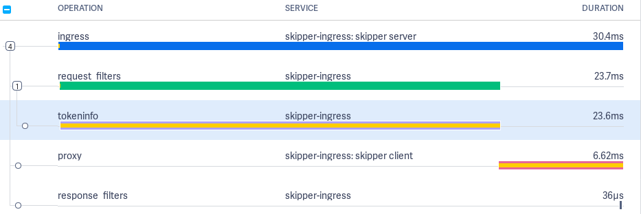
Some Tag details are added to all spans. 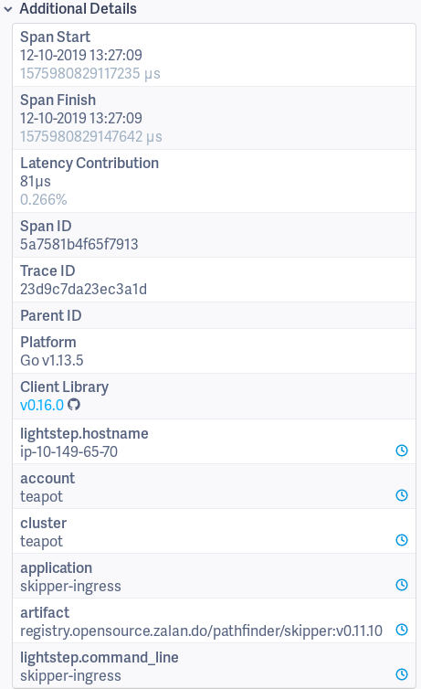
Ingress span¶
The Ingress span is active from getting the request in Skipper’s main http handler, until we served the response to the client of the request.
Tags:
- component: skipper
- hostname: ip-10-149-64-142
- http.host: hostname.example.org
- http.method: GET
- http.path: /
- http.remote_addr: 10.149.66.207:14574
- http.url: /
- span.kind: server
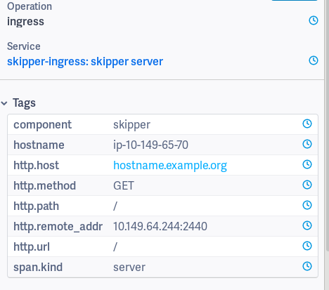
Proxy span¶
The Proxy span starts just before executing the backend call.
Tags:
- component: skipper
- hostname: ip-10-149-65-70
- http.host: hostname.example.org
- http.method: GET
- http.path: /
- http.remote_addr:
- http.status_code: 200
- http.url: http://10.2.0.11:9090/
- skipper.route_id:
kube_default__example_ingress_hostname_example_org____example_backend - span.kind: client
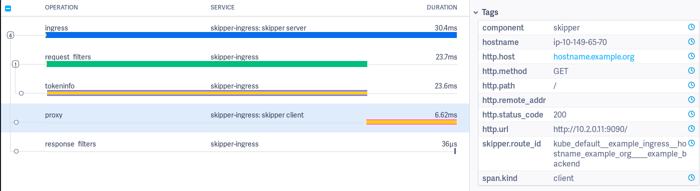
Proxy span has logs to measure
connect (dial_context),
http roundtrip
(http_roundtrip), stream headers from backend to client
(stream_Headers), stream body from backend to client
(streamBody.byte) and events by the Go runtime.
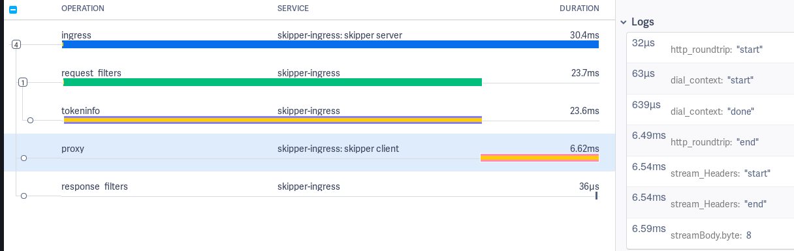
In addition to the manual instrumented proxy client logs, we use
net/http/httptrace.ClientTrace to show events by the Go
runtime. Full logs of the Proxy span:
http_roundtrip: "start": just before http roundtriphttp_roundtrip: "end": just after http roundtripget_conn: "start": try to get a connection from the connection pool httptrace.ClientTraceget_conn: "end": got a connection from the connection pool httptrace.ClientTraceDNS: "start": try to resolve DNS httptrace.ClientTraceDNS: "end": got an IP httptrace.ClientTraceTLS: "start": start TLS connection httptrace.ClientTraceTLS: "end": established TLS connection httptrace.ClientTraceconnect: "start": start to establish TCP/IP connection httptrace.ClientTraceconnect: "end": established TCP/IP connection httptrace.ClientTracewrote_headers: "done": wrote HTTP Headers into the socket httptrace.ClientTracewrote_request: "done": wrote full HTTP Request into the socket httptrace.ClientTracegot_first_byte: "done": Got first byte of the HTTP response from the backend httptrace.ClientTrace
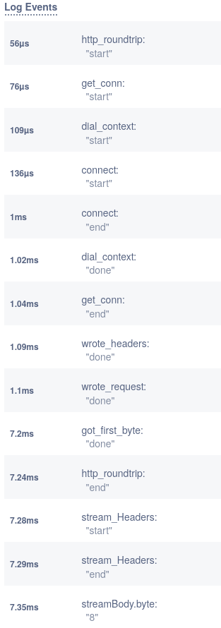
Request filters span¶
The request filters span logs show start and end events for each filter applied.
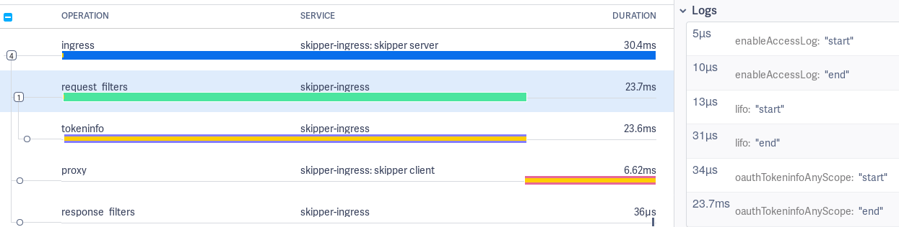
Response filters span¶
The response filters span logs show start and end events for each filter applied.
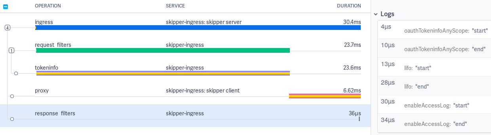
Request and response filters event logging can be disabled by setting the -opentracing-log-filter-lifecycle-events=false flag and
span creation can be disabled altogether by the -opentracing-disable-filter-spans flag.
Auth filters span¶
Auth filters are special, because they might call an authorization endpoint, which should be also visible in the trace. This span can have the name “tokeninfo”, “tokenintrospection” or “webhook” depending on the filter used by the matched route.
Tags: - http.url: https://auth.example.org
The auth filters have trace log values start and end for DNS, TCP
connect, TLS handshake and connection pool:
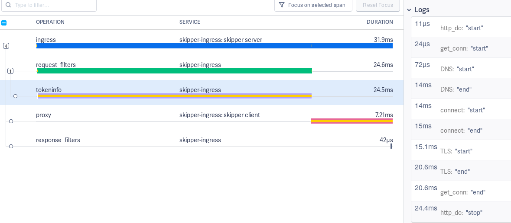
Open Policy Agent span¶
When one of the Open Policy Agent filters is used, child spans with the operation name open-policy-agent are added to the Trace.
The following tags are added to the Span, labels are taken from the OPA configuration YAML file as is and are not interpreted:
- opa.decision_id=<decision id that was recorded>
- opa.labels.<label1>=<value1>
The labels can for example be used to link to a specific decision in the control plane if they contain URL fragments for the receiving entity.
Redis rate limiting spans¶
Operation: redis_allow_check_card¶
Operation executed when the cluster rate limiting relies on the auxiliary Redis instances, and the Allow method checks if the rate exceeds the configured limit.
Operation: redis_allow_add_card¶
Operation setting the counter of the measured request rate for cluster rate limiting with auxiliary Redis instances.
Operation: redis_oldest_score¶
Operation querying the oldest request event for the rate limiting Retry-After header with cluster rate limiting when used with auxiliary Redis instances.
Dataclient¶
Dataclients poll some kind of data source for routes. To change the timeout for calls that polls a dataclient, which could be the Kubernetes API, use the following option:
-source-poll-timeout int
polling timeout of the routing data sources, in milliseconds (default 3000)
Routing table information¶
Skipper allows you to get some runtime insights. You can get the current routing table from skipper with in the eskip file format:
curl localhost:9911/routes
*
-> "http://localhost:12345/"
You also can get the number of routes X-Count and the UNIX timestamp
of the last route table update X-Timestamp, using a HEAD request:
curl -I localhost:9911/routes
HTTP/1.1 200 OK
Content-Type: text/plain
X-Count: 1
X-Timestamp: 1517777628
Date: Sun, 04 Feb 2018 20:54:31 GMT
The number of routes given is limited (1024 routes by default).
In order to control this limits, there are two parameters: limit and
offset. The limit defines the number of routes to get and
offset where to start the list. Thanks to this, it’s possible
to get the results paginated or getting all of them at the same time.
curl localhost:9911/routes?offset=200&limit=100
Passive Health Check¶
Skipper has an option to automatically detect and mitigate faulty backend endpoints, this feature is called Passive Health Check (PHC).
PHC works the following way: the entire uptime is divided in chunks of period, per every period Skipper calculates
the total amount of requests and amount of requests failed per every endpoint. While next period is going on,
the Skipper takes a look at previous period and if the amount of requests in the previous period is more than min-requests
and failed requests ratio is more than min-drop-probability for the given endpoints
then Skipper will send reduced (the more max-drop-probability and failed requests ratio
in previous period are, the stronger reduction is) amount of requests compared to amount sent without PHC.
If the ratio of unhealthy endpoints is more than max-unhealthy-endpoints-ratio then PHC becomes fail-open. This effectively means
if there are too many unhealthy endpoints PHC does not try to mitigate them any more and requests are sent like there is no PHC at all.
Having this, we expect less requests to fail because a lot of them would be sent to endpoints that seem to be healthy instead.
To enable this feature, you need to provide -passive-health-check option having forementioned parameters
(period, min-requests, min-drop-probability, max-drop-probability, max-unhealthy-endpoints-ratio) defined.
period, min-requests, max-drop-probability are required parameters, it is not possible for PHC to be enabled without
them explicitly defined by user. min-drop-probability is implicitly defined as 0.0 if not explicitly set by user.
max-unhealthy-endpoints-ratio is defined as 1.0 if not explicitly set by user.
Valid examples of -passive-health-check are:
-passive-health-check=period=1s,min-requests=10,min-drop-probability=0.05,max-drop-probability=0.9,max-unhealthy-endpoints-ratio=0.3-passive-health-check=period=1s,min-requests=10,max-drop-probability=0.9,max-unhealthy-endpoints-ratio=0.3-passive-health-check=period=1s,min-requests=10,min-drop-probability=0.05,max-drop-probability=0.9-passive-health-check=period=1s,min-requests=10,max-drop-probability=0.9
If -passive-health-check option is provided, but some required parameters are not defined, Skipper will not start.
Skipper will run without this feature, if no -passive-health-check is provided at all.
The parameters of -passive-health-check option are:
period=<duration>- the duration of stats reset periodmin-requests=<int>- the minimum number of requests perperiodper backend endpoint required to activate PHC for this endpointmin-drop-probability=[0.0 <= p < max-drop-probability)- the minimum possible probability of unhealthy endpoint being not considered while choosing the endpoint for the given request. The same value is in fact used as minimal failed requests ratio for PHC to be enabled for this endpointmax-drop-probability=(min-drop-probability < p <= 1.0]- the maximum possible probability of unhealthy endpoint being not considered while choosing the endpoint for the given requestmax-unhealthy-endpoints-ratio=[0.0 <= r <= 1.0]- the maximum ratio of unhealthy endpoints for PHC to try to mitigate ongoing requests
Metrics¶
A set of metrics will be exposed to track passive health check:
passive-health-check.endpoints.dropped: Number of all endpoints dropped before load balancing a request, so after N requests and M endpoints are being dropped this counter would be N*M.passive-health-check.requests.passed: Number of unique requests where PHC was able to avoid sending them to unhealthy endpoints.
Memory consumption¶
While Skipper is generally not memory bound, some features may require some attention and planning regarding the memory consumption.
Potentially high memory consumers:
- Metrics
- Filters
- Slow Backends and chatty clients
Make sure you monitor backend latency, request and error rates. Additionally use Go metrics for the number of goroutines and threads, GC pause times should be less than 1ms in general, route lookup time, request and response filter times and heap memory.
Metrics¶
Memory consumption of metrics are dependent on enabled command line flags. Make sure to monitor Go metrics.
If you use -metrics-flavour=codahale,prometheus you enable both
storage backends.
If you use the Prometheus histogram buckets -histogram-metric-buckets.
If you enable route based -route-backend-metrics
-route-response-metrics -serve-route-metrics, error codes
-route-response-metrics and host -serve-host-metrics based metrics
it can count up. Please check the support listener endpoint (default
9911) to understand the usage:
% curl localhost:9911/metrics
By default, the route and host metrics include the labels for the request
HTTP response status code and the HTTP method. You can customize it by
setting -serve-method-metric=false and/or
-serve-status-code-metric=false. These two flags will enable or
disable the method and status code labels from your metrics reducing the
number of metrics generated and memory consumption.
Filters¶
Ratelimit filter clusterClientRatelimit implementation using the
swim based protocol, consumes roughly 15MB per filter for 100.000
individual clients and 10 maximum hits. Make sure you monitor Go
metrics. Ratelimit filter clusterClientRatelimit implementation
using the Redis ring based solution, adds 2 additional roundtrips to
redis per hit. Make sure you monitor redis closely, because skipper
will fall back to allow traffic if redis cannot be reached.
Slow Backends¶
Skipper has to keep track of all active connections and http Requests. Slow Backends can pile up in number of connections, that will consume each a little memory per request. If you have high traffic per instance and a backend times out it can start to increase your memory consumption. Make sure you monitor backend latency, request and error rates.
Default Filters¶
Default filters will be applied to all routes created or updated.
Global Default Filters¶
Global default filters can be specified via two different command line
flags -default-filters-prepend and
-default-filters-append. Filters passed to these command line flags
will be applied to all routes. The difference prepend and append is
where in the filter chain these default filters are applied.
For example a user specified the route: r: * -> setPath("/foo")
If you run skipper with -default-filters-prepend=enableAccessLog(4,5) -> lifo(100,100,"10s"),
the actual route will look like this: r: * -> enableAccessLog(4,5) -> lifo(100,100,"10s") -> setPath("/foo").
If you run skipper with -default-filters-append=enableAccessLog(4,5) -> lifo(100,100,"10s"),
the actual route will look like this: r: * -> setPath("/foo") -> enableAccessLog(4,5) -> lifo(100,100,"10s").
Kubernetes Default Filters¶
Kubernetes dataclient supports default filters. You can enable this feature by
specifying default-filters-dir. The defined directory must contain per-service
filter configurations, with file name following the pattern ${service}.${namespace}.
The content of the files is the actual filter configurations. These filters are then
prepended to the filters already defined in Ingresses.
The default filters are supposed to be used only if the filters of the same kind are not configured on the Ingress resource. Otherwise, it can and will lead to potentially contradicting filter configurations and race conditions, i.e. you should specify a specific filter either on the Ingress resource or as a default filter.
Scheduler¶
HTTP request schedulers change the queuing behavior of in-flight requests. A queue has two generic properties: a limit of requests and a concurrency level. The limit of request can be unlimited (unbounded queue), or limited (bounded queue). The concurrency level is either limited or unlimited.
The default scheduler is an unbounded first in first out (FIFO) queue, that is provided by Go’s standard library.
In skipper we have two queues that are part of the scheduling decision:
- TCP accept() handler LIFO
- Filters:
fifo(),lifo()andlifoGroup()
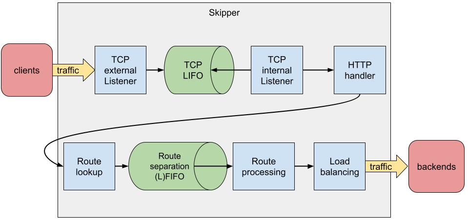
The Problem¶
Why should you use boundaries to limit concurrency level and limit the queue?
The short answer is resiliency. If you have one route, that is timing
out, the request queue of skipper will pile up and consume much more
memory, than before. This can lead to out of memory kill, which will
affect all other routes. In this Go
issue you can see the
memory spike if you can trigger to spike in connections. An internal
load test with different latency conditions showed usage increased in
Go’s standard library bufio package in
recorded profiles.
Why LIFO queue instead of FIFO queue?
In normal cases the queue should not contain many requests. Skipper is able to process many requests concurrently without letting the queue piling up. In overrun situations you might want to process at least some fraction of requests instead of timing out all requests. LIFO would not time out all requests within the queue, if the backend is capable of responding some requests fast enough.
Solution - TCP Accept Handler¶
Our Go package queuelistener provides the functionality to limit the number of accepted connections and goroutines that work on HTTP requests. This will protect the skipper process from out of memory kill (OOM), if you run the process within cgroup v1 or v2 with memory limits. This is true if you run it in Kubernetes. The queuelistener implements a LIFO queue between accepting connections and working on HTTP requests.
Options to change the behavior:
-enable-tcp-queue
-expected-bytes-per-request=
-max-tcp-listener-concurrency=
-max-tcp-listener-queue=
Solution - Filters¶
Skipper provides 2 last in first out (LIFO) filters and 1 first in first out filter (FIFO) to change the scheduling behavior for a route.
On failure conditions, Skipper will return HTTP status code:
- 503 if the queue is full, which is expected on the route with a failing backend
- 502 if queue access times out, because the queue access was not fast enough
- 500 on unknown errors, please create an issue
Skipper has two filters lifo() and
lifoGroup() and one
fifo() filter, that can limit
the number of requests for a route. A documented load
test
shows the behavior with an enabled lifo(100,100,"10s") filter for
all routes, that was added by default. You can do this, if you pass
the following flag to skipper:
-default-filters-prepend=lifo(100,100,"10s").
Both LIFO filters will, use a last in first out queue to handle most requests fast. If skipper is in an overrun mode, it will serve some requests fast and some will timeout. The idea is based on Dropbox bandaid proxy, which is not opensource. Dropbox shared their idea in a public blogpost.
Skipper’s scheduler implementation makes sure, that one route will not
interfere with other routes, if these routes are not in the same
scheduler group. LifoGroup has
a user chosen scheduler group and
lifo() will get a per route unique
scheduler group. We found out that the implementation of LIFO filters
are showing lock contention on high traffic routes. In case you fear
this behavior we recommend to use the FIFO filter that only use a
semaphore to reduce lock contention.
The fifo() is working similar to the
lifo() filter.
We recommend to isolate routes from each other by configuring a
fifo() filter by
-default-filters-prepend= to add it to every route.
The following picture shows the isolation in action. You can see that routeA is suffering, by high active requests and the green dots that show the queuing of requests in routeA. On the other hand you can see routeB, routeC, routeD and routeE, that show normal behavior, so these do not have an impact. 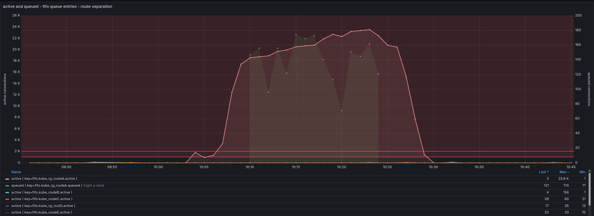
URI standards interpretation¶
Considering the following request path: /foo%2Fbar, Skipper can handle
it in two different ways. The current default way is that when the
request is parsed purely relying on the Go stdlib url package, this
path becomes /foo/bar. According to RFC 2616 and RFC 3986, this may
be considered wrong, and this path should be parsed as /foo%2Fbar.
This is possible to achieve centrally, when Skipper is started with
the -rfc-patch-path flag. It is also possible to allow the default
behavior and only force the alternative interpretation on a per-route
basis with the rfcPath() filter. See
rfcPath().
If the second interpretation gets considered the right way, and the other one a bug, then the default value for this flag may become to be on.
Debugging Requests¶
Skipper provides filters, that can change
HTTP requests. You might want to inspect how the request was changed,
during the route processing and check the request that would be made
to the backend. Luckily with -debug-listener=:9922, Skipper can
provide you this information.
For example you have the following route:
kube_default__foo__foo_teapot_example_org_____foo: Host(/^foo[.]teapot[.]example[.]org$/) && PathSubtree("/")
-> setRequestHeader("X-Foo", "hello-world")
-> <roundRobin, "http://10.2.0.225:9090", "http://10.2.1.244:9090">;
If you sent now a request to the debug listener, that will be matched by the route, Skipper will respond with information that show you the matched route, the incoming request, the transformed request and all predicates and filters involved in the route processing:
% curl -s http://127.0.0.1:9922/ -H"Host: foo.teapot.example.org" | jq .
{
"route_id": "kube_default__foo__foo_teapot_example_org_____foo",
"route": "Host(/^foo[.]teapot[.]example[.]org$/) && PathSubtree(\"/\") -> setRequestHeader(\"X-Foo\", \"hello-world\") -> <roundRobin, \"http://10.2.0.225:9090\", \"http://10.2.1.244:9090\">",
"incoming": {
"method": "GET",
"uri": "/",
"proto": "HTTP/1.1",
"header": {
"Accept": [
"*/*"
],
"User-Agent": [
"curl/7.49.0"
]
},
"host": "foo.teapot.example.org",
"remote_address": "127.0.0.1:32992"
},
"outgoing": {
"method": "GET",
"uri": "",
"proto": "HTTP/1.1",
"header": {
"Accept": [
"*/*"
],
"User-Agent": [
"curl/7.49.0"
],
"X-Foo": [
"hello-world"
]
},
"host": "foo.teapot.example.org"
},
"response_mod": {
"header": {
"Server": [
"Skipper"
]
}
},
"filters": [
{
"name": "setRequestHeader",
"args": [
"X-Foo",
"hello-world"
]
}
],
"predicates": [
{
"name": "PathSubtree",
"args": [
"/"
]
}
]
}
Profiling¶
Go profiling is explained in Go’s diagnostics documentation.
Profiling skipper or RouteSRV¶
To enable profiling in skipper you have to use -enable-profile. This
will start a profiling route at /debug/pprof/profile on the support
listener, which defaults to :9911.
Profiling example¶
Start skipper with enabled profiling:
skipper -inline-routes='r1: * -> inlineContent("hello") -> <shunt>' -enable-profile
Use Go tool pprof to download profiling sample to analyze (sample is not from the example):
% go tool pprof http://127.0.0.1:9911
Fetching profile over HTTP from http://127.0.0.1:9911/debug/pprof/profile
Saved profile in /$HOME/pprof/pprof.skipper.samples.cpu.004.pb.gz
File: skipper
Build ID: 272c31a7bd60c9fabb637bdada37a3331a919b01
Type: cpu
Time: Oct 7, 2020 at 6:17pm (CEST)
Duration: 30s, Total samples = 0
No samples were found with the default sample value type.
Try "sample_index" command to analyze different sample values.
Entering interactive mode (type "help" for commands, "o" for options)
(pprof) top
Showing nodes accounting for 2140ms, 50.00% of 4280ms total
Dropped 330 nodes (cum <= 21.40ms)
Showing top 10 nodes out of 303
flat flat% sum% cum cum%
560ms 13.08% 13.08% 640ms 14.95% syscall.Syscall
420ms 9.81% 22.90% 430ms 10.05% runtime.nanotime
410ms 9.58% 32.48% 410ms 9.58% runtime.futex
170ms 3.97% 36.45% 450ms 10.51% runtime.mallocgc
170ms 3.97% 40.42% 180ms 4.21% runtime.walltime
160ms 3.74% 44.16% 220ms 5.14% runtime.scanobject
80ms 1.87% 46.03% 80ms 1.87% runtime.heapBitsSetType
70ms 1.64% 47.66% 70ms 1.64% runtime.epollwait
50ms 1.17% 48.83% 120ms 2.80% compress/flate.(*compressor).deflate
50ms 1.17% 50.00% 50ms 1.17% encoding/json.stateInString
(pprof) web
--> opens browser with SVG
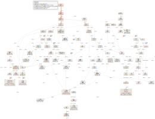
Response serving¶
When serving a response from a backend, Skipper serves first the HTTP response headers. After that Skipper streams the response payload and uses one 8kB buffer to stream the data through this 8kB buffer. It uses Flush() to make sure the 8kB chunk is written to the client. Details can be observed by opentracing in the logs of the Proxy Span.
Forwarded headers¶
Skipper can be configured to add X-Forwarded-* headers:
-forwarded-headers value
comma separated list of headers to add to the incoming request before routing
X-Forwarded-For sets or appends with comma the remote IP of the request to the X-Forwarded-For header value
X-Forwarded-Host sets X-Forwarded-Host value to the request host
X-Forwarded-Port=<port> sets X-Forwarded-Port value, or set to auto to use the port of the listener
X-Forwarded-Proto=<http|https|auto> sets X-Forwarded-Proto value, or set to auto to use http or https depending on the listener tls state
-forwarded-headers-exclude-cidrs value
disables addition of forwarded headers for the remote host IPs from the comma separated list of CIDRs
Converting Routes¶
For migrations you need often to convert X to Y. This is also true in
case you want to switch one predicate to another one or one filter to
another one. In skipper we have -edit-route and -clone-route that
either modifies matching routes or copy matching routes and change the
copy.
Example:
A route with edit-route
% skipper -inline-routes='Path("/foo") -> setResponseHeader("X-Foo","bar") -> inlineContent("hi") -> <shunt>' \
-edit-route='/inlineContent[(]["](.*)["][)]/inlineContent("modified \"$1\" response")/'
[APP]INFO[0000] Expose metrics in codahale format
[APP]INFO[0000] support listener on :9911
[APP]INFO[0000] route settings, reset, route: : Path("/foo") -> setResponseHeader("X-Foo", "bar") -> inlineContent("hi") -> <shunt>
[APP]INFO[0000] proxy listener on :9090
[APP]INFO[0000] TLS settings not found, defaulting to HTTP
[APP]INFO[0000] route settings received
[APP]INFO[0000] route settings applied
Modified route:
curl localhost:9911/routes
Path("/foo")
-> setResponseHeader("X-Foo", "bar")
-> inlineContent("modified \"hi\" response")
-> <shunt>
Modified response body:
% curl -v http://localhost:9090/foo
* Trying ::1...
* Connected to localhost (::1) port 9090 (#0)
> GET /foo HTTP/1.1
> Host: localhost:9090
> User-Agent: curl/7.49.0
> Accept: */*
>
< HTTP/1.1 200 OK
< Content-Length: 22
< Content-Type: text/plain; charset=utf-8
< Server: Skipper
< X-Foo: bar
< Date: Thu, 14 Oct 2021 08:41:53 GMT
<
* Connection #0 to host localhost left intact
modified "hi" response
With edit-route and -clone-route you can modify Predicates and Filters to convert from
SourceFromLast() to ClientIP, for example if you want to migrate
AWS cloud load balancer from Application Load Balancer to Network
Load Balancer, you can use
-clone-route='/SourceFromLast[(](.*)[)]/ClientIP($1)/' to create
additional routes for
r: SourceFromLast("9.0.0.0/8","2001:67c:20a0::/48") -> ...`
r: SourceFromLast("9.0.0.0/8","2001:67c:20a0::/48") -> ...`
clone_r: ClientIP("9.0.0.0/8","2001:67c:20a0::/48") -> ...`
/ symbol is not the only option for the separator for -edit-route and -clone-route, any
first symbol you will specify in those options could be used as separator. This could be useful
for IP mask changes, for example, you can use -edit-route='#/26#/24#. In this case
r: SourceFromLast("9.0.0.0/26","2001:67c:20a0::/48") -> ...`
r: SourceFromLast("9.0.0.0/24","2001:67c:20a0::/48") -> ...`